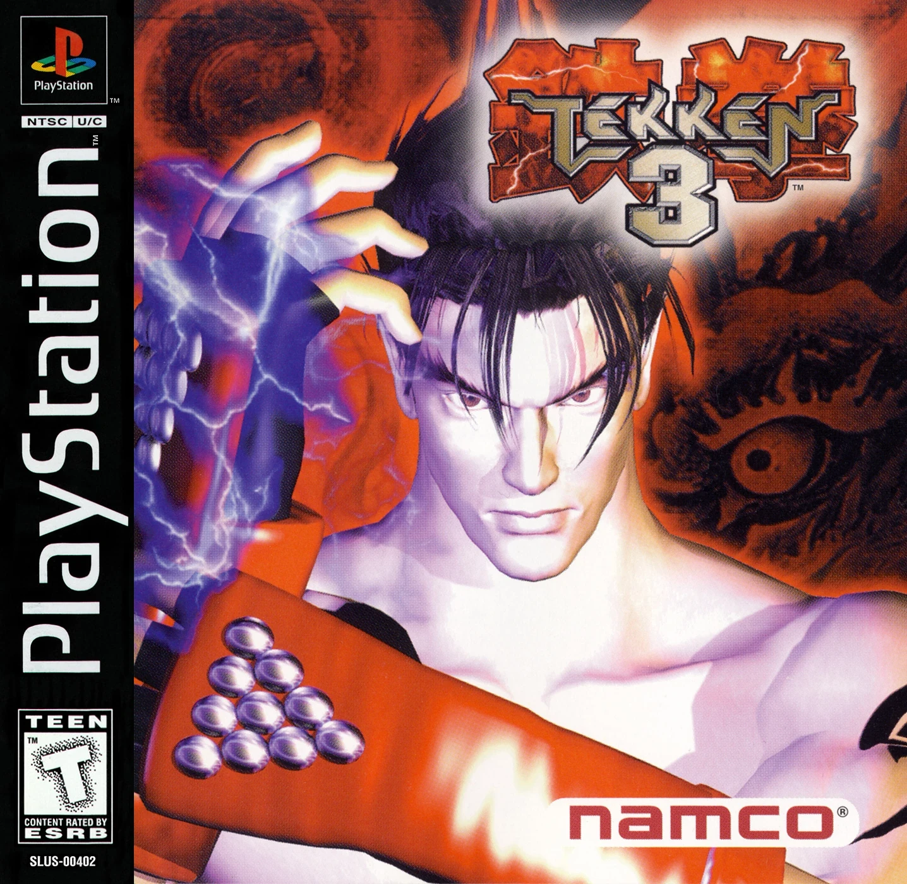

Tekken 3 (1997)
Tekken 3, Namco’nun PlayStation dönemine damga vuran en ikonik dövüş oyunlarından biri. AltDünya Pack sürümüyle DuckStation üzerinden modern sistemlerde tek tık çalışacak şekilde hazırlanmıştır.

Oyun Künyesi
AltDünya Yorumu
Tekken 3 bugün hâlâ sadece nostaljiyle değil, karakter çeşitliliği, akıcı tempo hissi ve arcade kökenli dövüş yapısı sayesinde de güçlü duruyor. Konsol Port kategorisi için hem bilinirliği yüksek hem de paket mantığını anlatması kolay bir açılış oyunu.
Kurulum Rehberi Videosu
Oyun Özeti
Tekken 3, serinin önceki oyunlarına göre daha akıcı animasyonlar, daha hızlı tempo ve daha güçlü karakter kimlikleri sunarak büyük bir sıçrama yaptı. Jin Kazama, Hwoarang, Xiaoyu ve Eddy Gordo gibi karakterler bu oyunda seriye eklenerek Tekken’in en unutulmaz kadrolarından birini oluşturdu. PlayStation sürümü arcade kökenini korurken ev kullanıcıları için bol içerikli ve yüksek tekrar oynanabilirliğe sahip bir dövüş paketi sundu.
Oyunun Önemi
- Tekken serisini dünya çapında zirveye taşıyan oyun olarak kabul edilir.
- PlayStation döneminin en çok hatırlanan ve en çok satan dövüş oyunlarından biridir.
- Yeni karakter eklemeleri ve daha doğal hareket sistemiyle serinin oynanış standardını yükseltti.
- Bugün bile retro dövüş oyunu listelerinde en üst sıralarda anılan yapımlardan biridir.
Kısa Fact Köşesi
- Arcade sürümü Namco System 12 donanımı üzerinde çalışıyordu.
- Eddy Gordo’nun capoeira stili oyunun en çok konuşulan yeniliklerinden biri oldu.
- Tekken 3’ün PlayStation sürümü, arcade dışında ek modlar ve içeriklerle daha da zenginleştirildi.
- Serinin bugünkü popülerliğinde en büyük kırılma noktalarından biri olarak görülür.